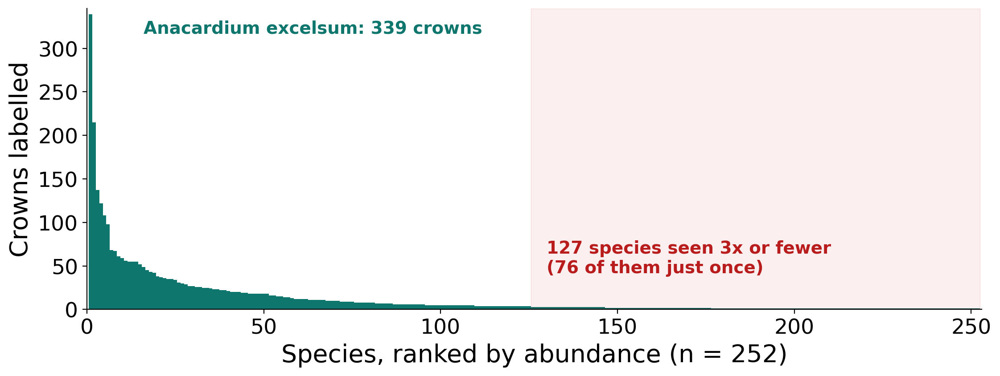
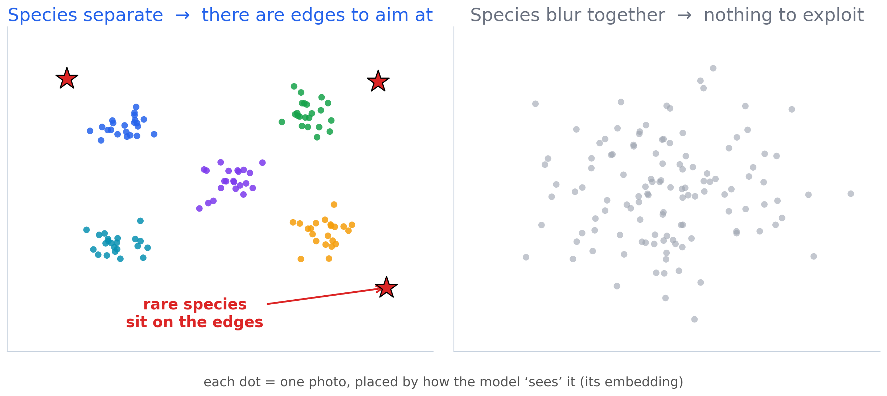
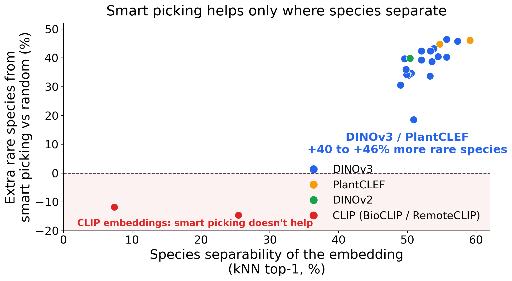
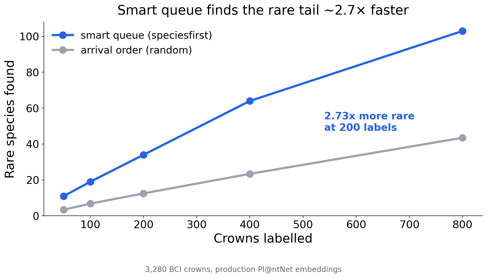
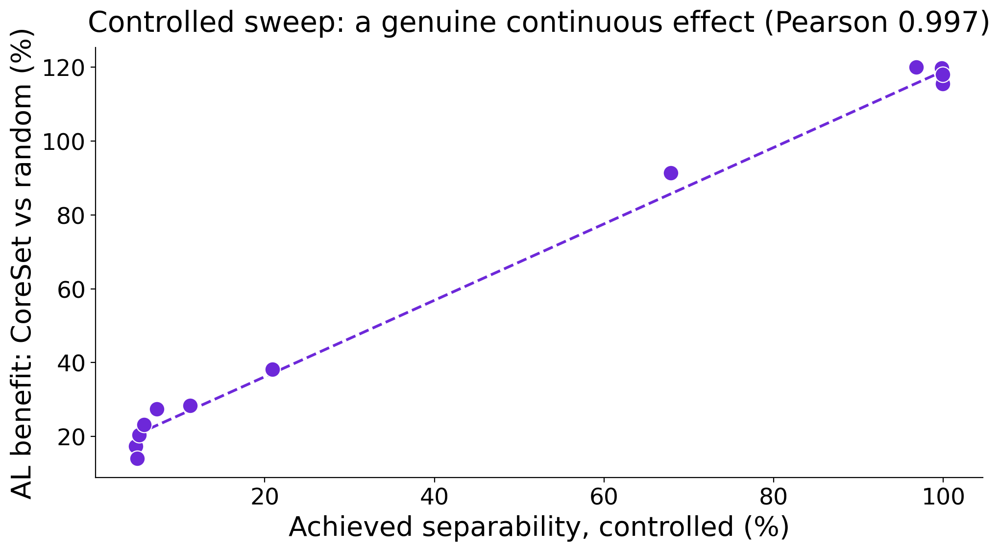

novel_margin, leans toward brand-new species when you expect them.)So the contribution isn't a clever new algorithm — it's the honest, falsifiable test harness. An unmodified 2018 method plus that protocol beats the industrial half-random hybrid and plain random.
We also reproduce the Beery transductive-needles method exactly (Kurinchi-Vendhan & Beery 2026, arXiv:2606.03821; per-point correlation 1.000).